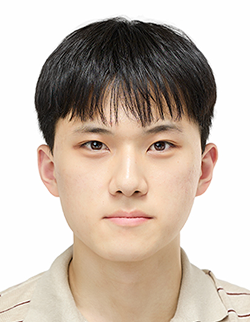

I am an undergraduate math student at POSTECH. I am currently staying in UC Berkeley as a visiting student. My research interests are geometric analysis, microlocal analysis, and inverse problems.
Email: jsyoun@berkeley.edu

CV (PDF)